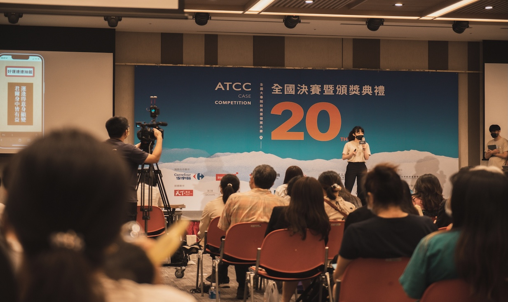

-
Jun. 2025 - Present
Data Engineer Intern (Remote)
REAS Innovation
Taipei, Taiwan
Created an AI-powered repair management system for United Daily News (UDN) that processes 100,000+ records to help reduce repair costs and speed up turnaround times. For Fubon Insurance, Maeve and I built an analytics platform that automatically transcribes customer service calls, summarizes conversations, and detects emotional sentiment - making Fubon easier for them to improve service quality.
Jan. 2024 - Present
Data Engineer Intern
-
Feb. 2025 - Present
Research Assistant
Duke-NUS Medical School, National University of Singapore
Singapore, Singapore
During my time at Duke-NUS, we worked on adapting European cardiac arrest prediction models for Asian healthcare settings. The challenge was taking models trained on European patients and making them work well across diverse Asian populations. We collaborated with doctors and healthcare partners across multiple countries in the region, using their multi-country data to fine-tune the models. We managed to get them performing at 76-78% accuracy while ensuring they treat all patient groups fairly - which means our partners and hospitals throughout Asia can leverage these advanced tools without the massive cost of building new models from the ground up.
On a research project with colleagues, we developed ShapKAN, which makes machine learning models both more interpretable and robust. We wanted to solve the problem of simplifying complex models without losing accuracy. Our approach actually improved results by 4-44% over existing methods, and it maintains stable performance even when the data distribution shifts - pretty important for real-world applications. -
Jan. 2024 - Jun. 2024
Team member
Analysis of cross-selling discount performance at Shopee trade
NCCU Data Science Club & Unilever
Taipei, Taiwan
We analyzed more than 600,000 transaction records, combining data‑mining techniques with retail‑sector knowledge to assess Unilever’s sales performance and uncover hidden sales trends at Shopee trade. Accounting for Taiwanese consumer behavior and temporal purchasing patterns, we then developed a schedule‑based strategy that is projected to lift sales by more than 10 percent.
Jan. 2024 - Jun. 2024
Team member
Analysis of cross-selling discount performance at Shopee trade
-
Sep. 2023 - Dec. 2023
Team member
Business model and data visualization
NCCU Data Science Club & Dogger Instrument
Taipei, Taiwan
Ｗe identified the critical commercial indicators and fused them with detailed sales‑behavior insights to build predictive models. It helps to track product trends and inform strategic decisions through revamped internal dashboards. In parallel, I created an intuitive abnormal‑stock warning system that continuously monitors inventory levels and flags irregular sales patterns, boosting operational efficiency and responsiveness.
-
Jun. 2023 - Jul. 2023
Technical Sales Specialist intern
InternationalBusiness Machines (IBM)
Taipei, Taiwan
I designed and delivered a series of introductory data‑mining workshops and product demonstrations of SPSS Modeler. It increased LinkedIn engagement by 300 percent and helped explore prospective client through close cooperation with our business partners. Under my mentor’s guidance, I also resolved more than ten technical issues to improve the client experience and worked alongside the sales team to strengthen customer relationships.
Jun. 2023 - Jul. 2023
Technical Sales Specialist intern
-
Jul. 2022 - Dec. 2022
Research Assistant of Center for Green Economy
Chung-Hua Institution for Economic Research
Taipei, Taiwan
My primary research focused on variable selection and regression modeling for recyclate markets. I produced regular reports on domestic and international recyclate prices, evaluating how global events affected market dynamics and offering actionable insights. By pinpointing indicators that closely track national price fluctuations, I built a transparent, reliable multiple linear regression model for forecasting market trends and drafted policy recommendations aimed at stabilizing the recycling industry and safeguarding recyclers’ livelihoods.
experience
Opened Selected Project
Move your mouse to the center of each picture to open its GitHub link! (Except for the one at right-end corner.)

ATONA Case Competition (Track : Shin Kong Insurance) - First Runner-Up (2022)
The IMA AI/ML Congress System Holdings Student Prize - First Honour (2024)
Unveiling the Dynamics Underlying the Cocoa Bean Future Markets (2024)
Group Project - Deep Learning in Data Analytics (2025)

Enhancing Urban Transit System Efficiency During Peak Periods: A Singapore Case Study (2025)
Shift-Invariant Attribute Scoring for Kolmogorov-Arnold Networks via Shapley Value (2025)